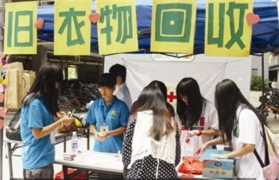
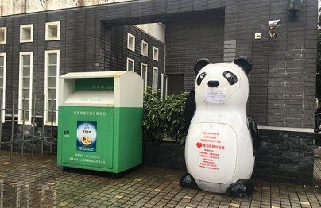
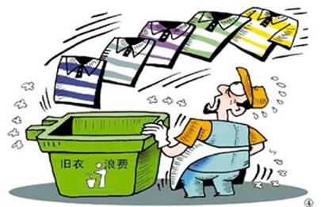

传统衣物回收模式
传统的衣物回收多以布置摊点的形式，在社区、校园进行回收。这种方式具有很大的随机性，面向范围很小，所以很容易导致回收效率低的问题。

“绿房子”衣物回收模式
新型的衣物回收形式，多以社区、高校投放自助捐赠箱体形式出现。这种方式需要较大的前期投入，箱体的成本、占地成本等，而且对于这种类型的回收机构我们并不能知晓其回收目的，难以保证捐赠物品的去向。

然而
旧衣物浪费现象仍旧“嚣张”。所以一边是“物难尽其用”，一边是“没有好衣服穿”的社会现象并不能得到改观。
客服热线：150-7913-6289
邮箱：1355725095@qq.com
江西省南昌市搜旧科技有限公司
地址：江西省南昌市江西师范大学先骕楼-3407室
京ICP备201526704031号-3